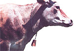
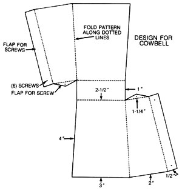
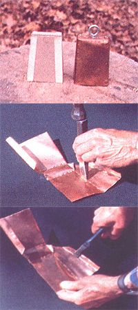

You can keep an ear on your good old woods-wandering Bessie with these homemade...
If you've ever heard the gentle tinkling of cowbells on the evening air as a herd of milkers slowly wended their way across a distant pasture, then you know what a calming effect those peaceful chimings can have on a body after a hard day's work. Maybe you even long to re-create those subtle sounds by hanging a copper bell around your bovine's neck (especially if the critter's given to hiding in the woods!). Then again, perhaps you've got a nostalgia-loving friend or relative who'd appreciate an authentic cowbell as a Christmas gift. Unfortunately, real copper bells are pretty hard to find nowadays, and the ones that are available (in antique stores, usually) are priced out of many folks' range.
Of course, you could always make your own ...in which case you might be able to enjoy those memorable (and practical) sounds for only pennies a bell! About all you'll need to produce one cowbell is a square foot of 16-ounce (23to 24-gauge) copper flashing, which you can find at a junkyard, a hardware store, or a craft supply shop. If you want a louder bell, use galvanized sheet metal or a heavier copper.
Besides the main ingredient, you'll have to round up cardboard, a pencil, scissors, offset tin snips, a hammer, a cold chisel, flatglass pliers, a handful of self-tapping screws or copper rivets ...as well as a 3/16" eyebolt with a 1"-long stem, a lock washer and nut, wire or string, a short (or sawed off to 1/2") carriage bolt, and long-nosed pliers.
DESIGN WORK
Once you've gathered up all your supplies, copy the pattern-shown in the illustration accompanying this article-onto the piece of cardboard. Then cut out the model, fold it where indicated to form the "skirt" of the bell, and either tape or paper-clip it together to make sure the proportions are right. Should it not fit together neatly, make whatever adjustments are needed. Then, when the pattern checks out, open it up and trace it onto the sheet of copper.
Now, using the offset tin snips, cut the metal to shape. That done, measure and scribe the inside lines with a sharp utensil... and, using a hammer and cold chisel, score the copper along these lines, being very careful not to cut all the way through the metal as you do so. Next, bend along these scored lines, using a pair of pliers, to form a slant- sided bell. Drill small holes at the appropriate places (as indicated in the illustration), and fasten the form together with self-tapping screws or copper rivets.
MAKE IT RING
To finish off your bell, you'll need to make a clapper. Begin this operation by drilling a 1/16" hole in the top center of the bell and another 1/16" hole in the stem of the 3/16" eyebolt. (In order to center-punch and drill this second hole, you'll probably first have to grind or file a flat place on the side of the bolt thread.)
Next, place the 1" stem of the eyebolt down through the newly drilled hole in the top of the bell, leaving the ring up top to serve as a hanger. Then-working inside the skirt-place a washer and nut on the eyebolt stem and tighten them with a pair of long-nosed pliers. With this assembly in place, thread a thin strip of wire (or heavy string) through the hole in the bottom end of the bolt and twist (or tie) it securely. Now you're ready to mount the clapper!
This noisemaker can be easily manufactured out of a short (or sawed off to 1/2") roundheaded carriage bolt. After filing the thread flat on one side, center-punch and drill a 1/16" hole through the stem. Thread the wire (or string) into this hole, and pull the clapper up into the bell. (Make sure it's in far enough to strike the inside bottom edge of the skirt.)
There you have it ...an authentic handmade copper cowbell fit to ring round Bessie's neck, or to decorate a parlor shelf.
|
 The cardboard model beside the finished cowbell. After scribing the copper, score the metal along these lines (being careful not to cut through the copper as you do so) with a hammer and a cold chisel. Then bend the metal along the scored lines with pliers. |
 |
 |